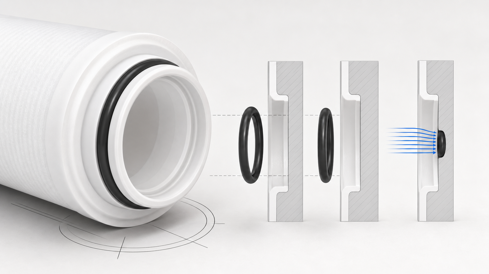

PP
기술 정보
필터 카트리지 PP. 견적을 요청하기 전에 연결 방식과 프로젝트 요구사항을 확인하십시오.
견적을 요청하기 전에 연결 방식과 프로젝트 요구사항을 확인하십시오.
PP
기술 정보
- Silicone O-ring
- 견적을 요청하기 전에 연결 방식과 프로젝트 요구사항을 확인하십시오.
- 기술 정보
- 견적을 요청하기 전에 연결 방식과 프로젝트 요구사항을 확인하십시오.
PP
기술 선정 안내서
- 견적을 요청하기 전에 연결 방식과 프로젝트 요구사항을 확인하십시오.
- 견적 전에 카트리지 치수, 연결 규격, 설치 공간 및 교체 작업 공간을 확인하십시오. 유지보수 시 급수를 차단하고 압력을 해제한 뒤 나사부와 밀봉 부품을 점검하십시오.
PP
제품
FAQ
기술 선정 안내서
필터 카트리지 PP — 기술 정보?
Silicone O-ring. 견적을 요청하기 전에 연결 방식과 프로젝트 요구사항을 확인하십시오.
필터 카트리지 PP — 기술 선정 안내서?
견적을 요청하기 전에 연결 방식과 프로젝트 요구사항을 확인하십시오.